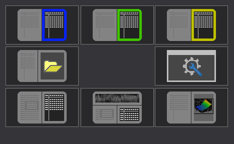

|
The dialog Connect Helper (Maximize Button Popup) |

  
|
|
The dialog Connect Helper (Maximize Button Popup) |
|

This dialog appears when you hover the mouse cursor over the maximize button of a hexdump / map. It provides easy access to the various connect functions.
Top line:
Connect the current hexdump/map to another window. Up to 3 windows are suggested here (highlighted in color). Only windows that are open (and for maps: suitable for connecting) are suggested.
Middle line:
Left: This icon can be clicked if the current window is a map and all other maps in the same folder have the same number of lines. All these windows are then opened and connected. (You can achieve the same function by double-clicking the folder name).
Right: Opens the hexdump or map connect dialog.
Bottom line:
Left: Opens a map window which synchronizes with the hexdump. It always shows the map that is currently under the text cursor in the hexdump.
Center: Like [Left], but opens a second hexdump in a different view mode. If you hold down shift while clicking on this icon, the text hexdump becomes large and the 2d hexdump small. (Hotkey: Ctrl+3 / Ctrl+Shift+3)
Right: Opens the current hexdump / map in a second view mode. (You can access the same function by holding down the Ctrl key while clicking on the view tab).
Shortcuts
Symbol bar: |
- |
Keyboard: |
- |